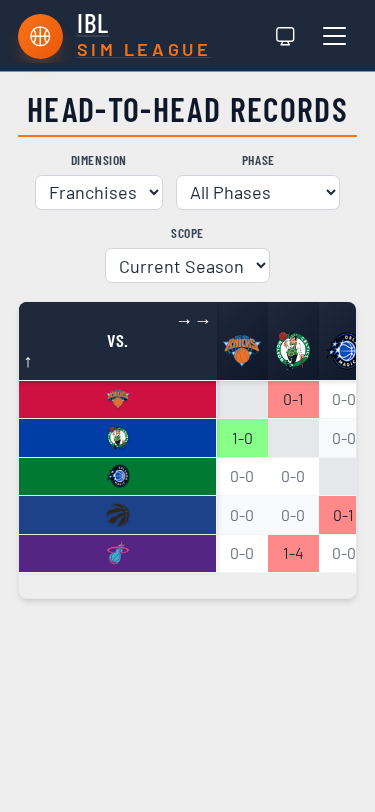
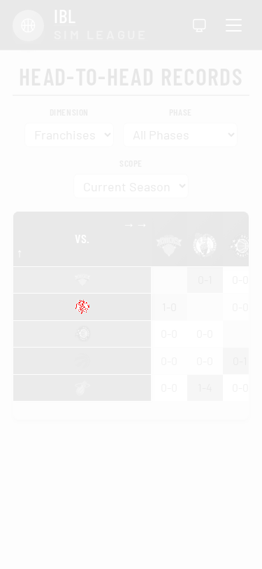

Visual review — changed renders
api-keys
api-keys (desktop)
Before (master) After (this PR)
After (this PR) Diff
Diff
api-keys-mobile (mobile)
Before (master) After (this PR)
After (this PR) Diff
Diff
api-keys-guide
api-keys-guide (desktop)
Before (master) After (this PR)
After (this PR) Diff
Diff
head-to-head-records
head-to-head-records-mobile (mobile)
Before (master) After (this PR)
After (this PR)
Diff